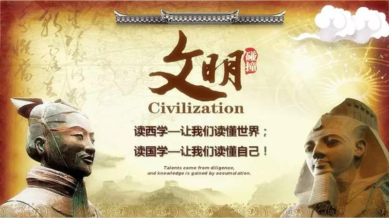

彼得德鲁克说：“一个企业只能在企业家的思维空间里成长,一个企业的成长被其经营者所能达到的思维空间所限制!”学习是打开思维空间即企业成长最快速的方式！

前言
读懂世界，读懂自己！
思想创新是统治世界的基石，十年的企业靠经营，百年的企业靠文化。宗教千年不倒，靠的是智慧的力量。只有既了解中国的传统文化，又了解西方的思想和知识体系，我们才能洞察现代社会的真正来源与传承，读懂世界，也读懂自己！正所谓“中学为体，西学为用”只有这样我们才有能力与其他文明一起来为一个更合理更美好的世界设计和制定新的规则、新的秩序和新的蓝图，才能与其他文明一起共同来主导世界的新变化。
让我们以思想为翼，飞向世界，抵达自我！
2018年6月2-3日国学经典学堂特邀武汉大学哲学学院赵林教授为大家带来《基督教对现代社会转型的影响》课程，通过讲述马丁•路德的宗教改革，英国的宗教改革以及加尔文的宗教改革，进而了解宗教战争到宗教宽容，最后一同探讨宗教改革的历史意义，帮助我们了解世界，读懂世界！
主讲嘉宾： 赵林
●武汉大学哲学学院教授
●国家教学名师，兼任中华外国哲学史学会理事、中国宗教学学会理事。
●主要研究方向为西方哲学、西方文化和基督教思想史。现已出版个人学术专著9部，演讲集7部，发表学术论文170余篇。
主题内容
一、马丁•路德的宗教改革
●北部欧洲宗教改革的激发因素
●异端思想的先驱们
●马丁•路德的宗教之路
●马丁路德宗教改革的影响
二、英国的宗教改革
●新教三大主流教派
●英国的宗教改革的不同特点
●英国宗教改革之路
三、加尔文的宗教改革
●加尔文教发展的独特之处
●加尔文的宗教改革之路
●加尔文教与资本主义精神
●加尔文教成为国际性新教教派
四、再洗礼派
五、从宗教战争到宗教宽容
●罗马天主教会的改革运动与特兰托信纲
●宗教战争
●从宗教宽容到普遍宽容，促成“天才世纪”
六、宗教改革的历史意义
上课时间和地点
时间: 2018年6月2-3日（周六、周日）
上午9:00-12:00;下午13:30-16:30
地点：深圳市南山区科技园南区深圳清华大学研究院
报名咨询：
请在右侧留言或致电400-115-1005（12小时*7天）报名
获取本周课程表请电话咨询400-115-1005（12小时*7天）
国学经典学堂

国学经典学堂汇聚国学一流专家学者，综览古今经典思想智慧，解读历史兴替得失。
旨在帮助创业者、企业家研习并践行国学。在复杂的企业经营环境中，学会规避风险、把握商机、赢得优势、参透事物本质。探索修身、治企有效路径。
你走得有多远，取决与谁同行。
加入国学班，与卓越者同行
联系方式：400-115-1005 邮箱:fub@tsinghua-sz.org
地址：深圳市南山区高新科技园南区高新南七道19号深圳清华大学研究院五楼


版权所有：深圳清华大学研究院 备案：粤ICP备11063336号-3 深圳网站建设：沙漠风